actividad #1
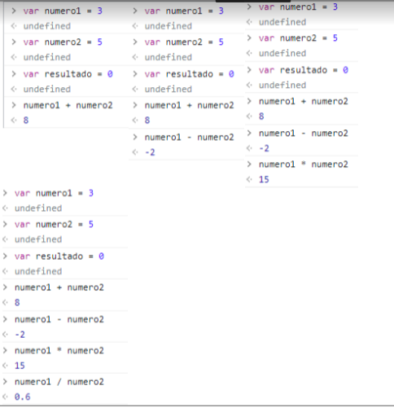
el primer ejercicio es sencillo siempre
actividad #2
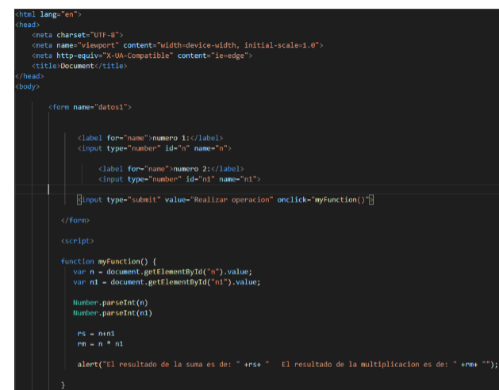
hacer formularios algo que hicimos en el semestre pasado
actividad #3
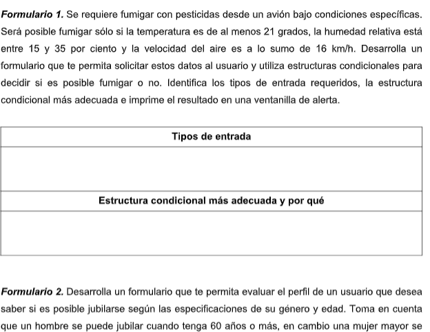
formularios pero ahora con funciones
actividad #4
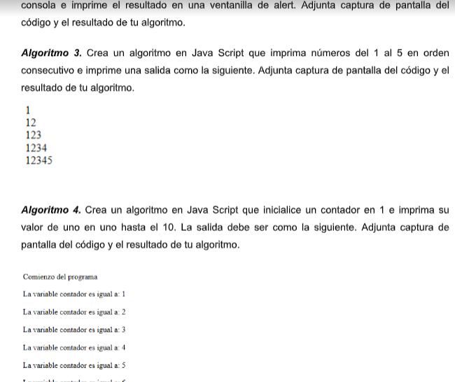
empleo el uso de los javascript
actividad #5
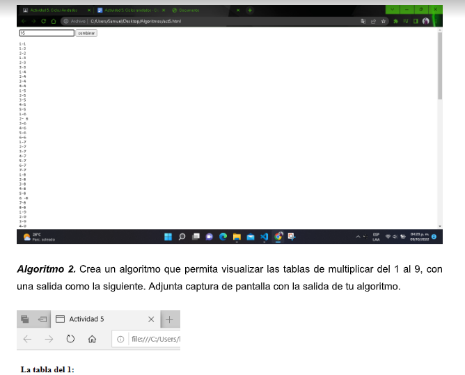
aqui aprendi a usar el repetidoe en el texto
actividad #6
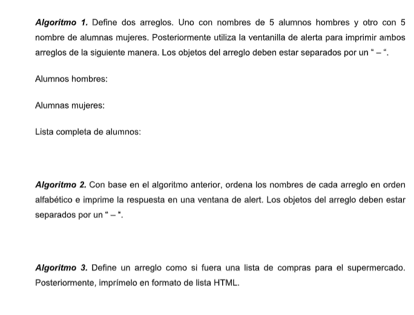
use los repetidores de texto
actividad #8
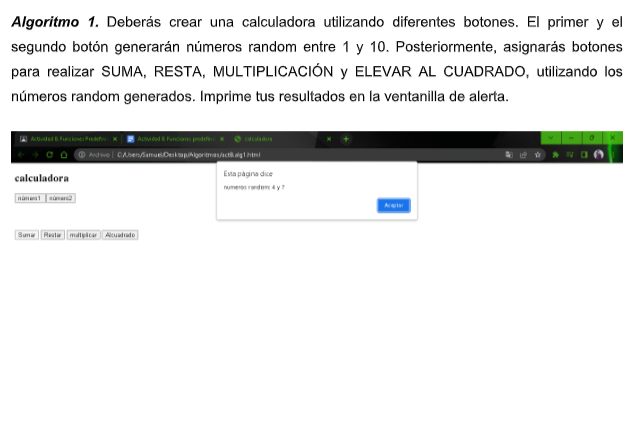
una calculadora basica con funciones avanzadas
actividad #9
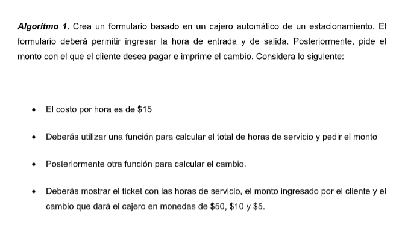
aun mas formularios y usandolo para cosas mas avanzadas
actividad #12
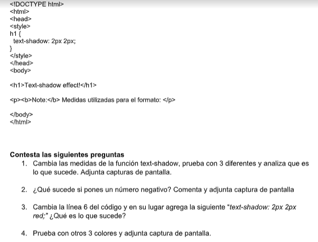
empleo la sombra en el texto
actividad #13
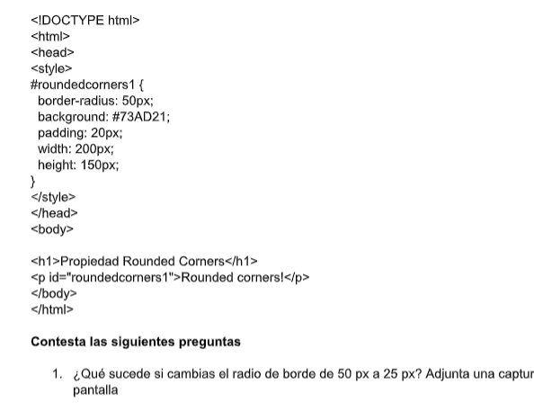
empleo mas funciones de un css
actividad #14
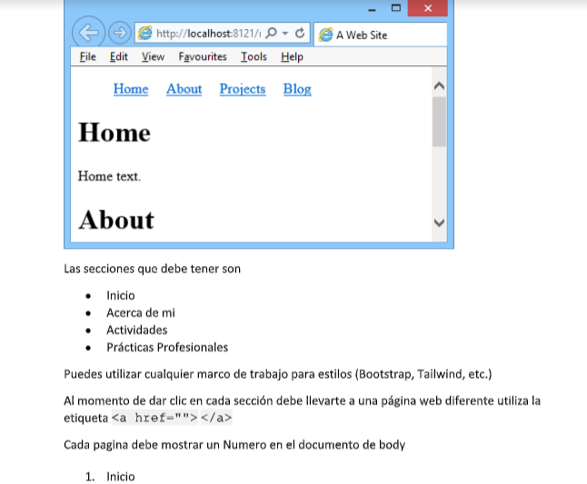
de aqui me base para este trabajo final
volver